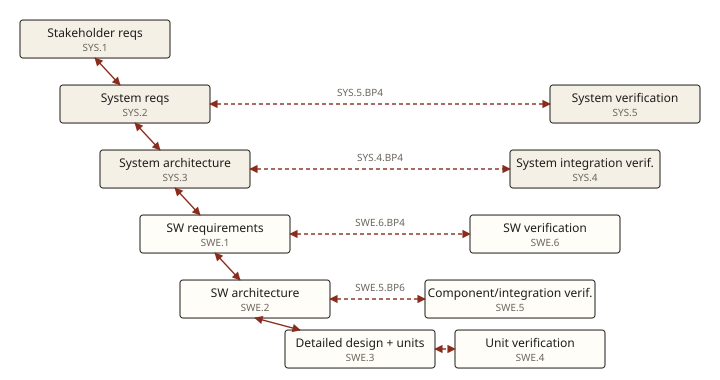

Lesson 4 of 9 · Automotive SPICE, the vital 20 %
Consistency and traceability
One base practice appears, almost word for word, in every engineering process. It is where modern Git-based teams most often lose points, and it is cheap to get right once you know what the assessor is checking.
The OEM wants the heating ramp shortened from 90 s to 60 s. Which process handles the request?
PA 1.1 F · PA 2.1 L · PA 2.2 F · PA 3.1 L · PA 3.2 L. Which level?
One base practice, everywhere
Every SYS and SWE process has a BP called "Ensure consistency and establish bidirectional traceability". SUP.10 has one for change requests, and MAN.3.BP9 asks for consistency across the plan[Guidelines §2.3.4, p. 55]. Together they form a chain down the left side of the V and across to the verification on the right:

Two words, two different demands
- Bidirectional traceability. From each requirement you can find what implements and verifies it, and from each test or code element you can find which requirement it serves. Both directions matter: forwards gives coverage, backwards catches code nobody asked for.
- Consistency. The linked items actually agree. "Traceability alone, e.g., the existence of links, does not necessarily mean that the information is consistent"[PAM SWE.1.BP5 note 11, p. 45]. A test linked to a requirement that checks something else is a consistency failure with perfect traceability.
The assessor checks content too: system requirements are checked "not only … for traceability to the stakeholder requirements but also if [they] reflect the intention"[Guidelines §1.4.3.3, p. 39].
What counts as evidence, and what doesn't have to
Information item 13-51 Consistency evidence lists traceability through "hyperlinks, repository location or editorial references", naming conventions, revision history and "notes in Git commits comments", with "evidence of Definition of Done (DoD) adherence" given as an example[PAM Annex B, p. 140]. The Guidelines then protect several lightweight practices with "shall not be downrated" rules[Guidelines §2.3.4.3–5, pp. 58–60]:
| Rule | Allowed without downrating |
|---|---|
| TAC.RL.1 | Tracing between reasonable clusters (a group of requirements to a component) instead of every atomic element. |
| TAC.RL.2 | A manual approach with snapshot-based checks instead of an automated tool. |
| TAC.RL.3 | No formal review record, when consistency is ensured by pair work, peer spot checks, revision-history notes or commit comments. |
The agile trap. Teams that keep requirements only inside tickets can trace a story to its code easily, but have "no overview of all requirements". At the end, "the requirements of the feature can only be determined by assessing all tasks of the feature"[Guidelines §2.5.2.3, p. 78]. Traceability then points at a moving pile of changes rather than a current requirement set, and consistency can't be judged.
Traceability within one process's work products (between two sections of the architecture, for instance) is not a level 1 matter. It belongs to GP 2.2.2 at level 2[Guidelines §2.3.4.2, p. 57].
Practice: find the weakness at Seat-Heat
Architecture components trace to requirement epics, not individual requirements.
HIL tests carry @verifies SHREQ-123, and CI links their results to the commit.
PRs reference the story's Jira key, and stories are not linked to requirement issues.
Unit tests are named after modules, and there is no detailed design naming those modules.
A HIL test tagged @verifies SHREQ-40 checks the 60 s ramp, but SHREQ-40 still says 90 s. What is violated?
From memory
Why can a project have complete traceability and still be downrated on the "consistency and traceability" BP?
Because links only prove a relationship was recorded, not that the linked items agree. The BP demands consistency too: the test really checks the requirement, and the architecture really implements it. Links without agreement are traceability without consistency.
Your win: you can walk a team's toolchain and point to exactly where the V breaks. That covers the level 1 content. Next: what turns a performed process into a managed one, starting with PA 2.1.
Read next
VDA Guidelines §2.3.4, pp. 55–60, the whole consistency and traceability section, with its figures. Then PAM Annex C.4, pp. 157–158.
Want to check a trace chain from your own tooling? Describe it to your teacher (the agent) in the chat.